Trespostas de hoje→ver as respostasdemonstração: S simula respostas, 0 apaga, T alterna turma e todas
Precisamos fazer esse curso ser uma experiência.
Victor, ao pedir esta apresentação · 2 nov. 2026
cada ponto é uma pessoa ·
nunca usou
todo dia
←→pergunta anterior e próximaTrespostas de hoje
A IA no jornal e na busca
Em 2022, 48 textos por mês da Folha citavam “inteligência artificial”. Em 2026, dez vezes mais.
No Google, a procura por “inteligência artificial” parou de crescer em 2023.
O Brasil não procura “inteligência artificial”. Procura o ChatGPT.
O jornal e o público nem sempre olham para o mesmo lugar.
0textos
Jornal: busca do site da Folha de S.Paulo, sem curadoria · Busca: Google Trends, Brasil · coletados em 2 nov. 2026
Mostrar esse cenário a partir do observatório, utilizando o observatório como um “meta” exemplo.
Victor, nas anotações para o curso · 2 nov. 2026
Um problema
Uma professora de Física quer que a turma veja, e não só decore, como se calcula o centro de massa.
Uma conversa depois
A gangorra que faz a conta
Arraste os pesos: a gangorra tomba e a fórmula se refaz com os números da tela.
O pedido
Um professor quer criar uma visualização para explicar para os seus alunos como funciona o cálculo de centro de massa.
Victor, pedindo este exemplo · 2 nov. 2026
Quem fez
Claude Code
O que fez
Montou a gangorra, o balanço e a fórmula que se refaz a cada movimento
Um problema
Falta gente para o Uno de domingo. Dá para ter adversários que pensam cada jogada sem nenhuma IA ligada?
Uma conversa depois
Quatro robôs numa mesa de Uno
A partida acontece agora, no navegador: não é um vídeo gravado, e as cartas mudam a cada jogo. Os robôs não são IAs. Cada um tem uma ficha com três regras e confere de cima para baixo; o balão mostra a regra que ele usou.
O pedido
Fazer algo bem mais impressionante, como se fosse uma mesa e tendo algum tipo de representação para cada bot.
Victor, sobre a versão anterior · 2 nov. 2026
Quem fez
Claude Code (mesa e fichas) e Gemini no Antigravity (os robôs)
O que fez
Escreveu uma vez a ficha de regras de cada robô e montou a mesa; pediu ao Gemini os retratos. Na partida, nenhuma IA é chamada
Por trás da mesa
Os robôs não foram desenhados por ninguém. Uma IA pediu a outra.
Uma IA pedindo a outra
Quatro jeitos de jogar
A atacante, o cuidadoso, a colorida e o guardador: o jeito de cada um está no rosto e na ficha de regras.
O pedido
Quatro bustos de robôs simpáticos, lado a lado […] cada um com uma personalidade visível no rosto: um confiante, um pensativo, um alegre, um desconfiado.
Claude Code, pedindo ao Gemini (Antigravity) · 2 nov. 2026
Quem fez
Gemini, pela ferramenta de imagens do Antigravity
O que fez
Desenhou os quatro numa imagem só; o Claude recortou cada um e pôs na mesa
Um problema
Um laboratório quer acompanhar tudo o que sai sobre IA, em português, sem ter uma equipe de programadores.
Um portal
Um observatório inteiro sobre IA
Mais de 1.600 materiais, as notícias de IA todo dia e aulas interativas. De onde vieram os dados que vocês acabaram de ver.
Os pedidos
Não houve um pedido só. O portal cresceu aos poucos, um pedido de cada vez: primeiro o catálogo, depois a nuvem de palavras, as notícias do dia, as aulas.
Equipe do Observatório · de julho a novembro de 2026
Quem fez
Codex, Claude Code e outras IAs de código
O que fez
Escreveu o código, uma versão de cada vez (mais de 250 em quatro meses); a equipe do LAPIG escolhe e revisa cada conteúdo
Antes de seguir, uma pergunta: quem fez tudo isso?
Tudo foi feito conversando com uma IA, em português comum.
Inclusive esta apresentação. Hoje vocês aprendem o caminho.
Do chat ao agente
Esta apresentação
O jornal e a busca
A gangorra
A mesa de cartas
Os robôs
O Observatório
o chat de IA que você já usa
Fase 2 · No navegador
Um problema por vez
Resolvido aqui mesmo, sem instalar nada.
Antes de começar
IA de graça no navegador: o que cada uma dá
Durante a prática
Travou? Pergunte à coruja
O monitor do curso fica no canto de todas as páginas. Ele responde com IA e leva você à página certa.
Pergunte do seu jeito. Pode colar a mensagem de erro que apareceu.
A resposta traz o link para o trecho do curso que resolve.
Não escreva nome, e-mail, CPF ou senha.
Pergunte ao Observatórioresponde com IA
Por que o Windows pediu permissão para o app fazer alterações?
É a preparação da área fechada, onde o agente lê os arquivos, e só acontece na primeira vez. Clique em Sim para o app ChatGPT concluir a configuração.
Instalar o ChatGPT · Preparar o Windows →
Escreva sua dúvida ou cole o erro→
Como cada exemplo funciona
Todo exemplo segue o mesmo caminho. Primeiro o problema, depois a solução.
Um problema
No fim da reunião, você fotografou a lousa com as tarefas da semana. Precisa mandar a tabela para a equipe, e ninguém quer digitar.
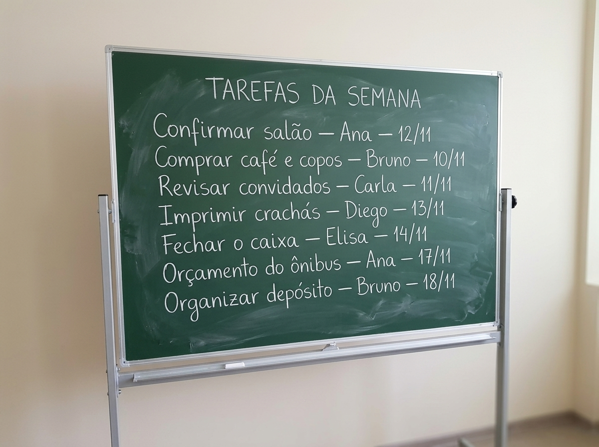
Este é o arquivo do exemplo. Você baixa no próximo passo.
Gravado no Gemini
As 7 tarefas numa tabela
Em cerca de 10 segundos, o Gemini transformou a foto da lousa escrita a giz numa tabela com tarefa, responsável e prazo. As 7 tarefas ficaram iguais às da foto.
gravação real · 3 nov. 2026
O pedido
Transforma essa foto do quadro numa tabela com as colunas tarefa, responsável e prazo.
Digitado no Gemini, com a foto anexada · 3 nov. 2026
Quem fez
Gemini, no navegador
O que fez
Leu a foto e devolveu a tabela com as 7 tarefas, responsáveis e prazos
Um problema
Você vai assinar o contrato de limpeza da sua padaria, de 5 páginas, e precisa entender valor, pagamento, multa e cancelamento antes de assinar.
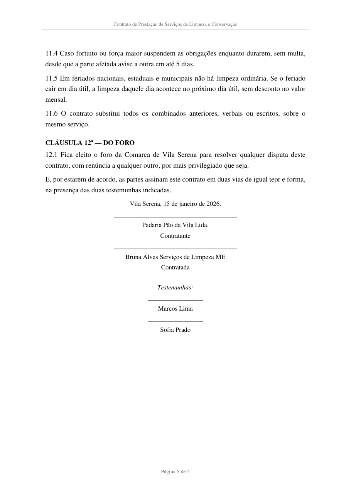
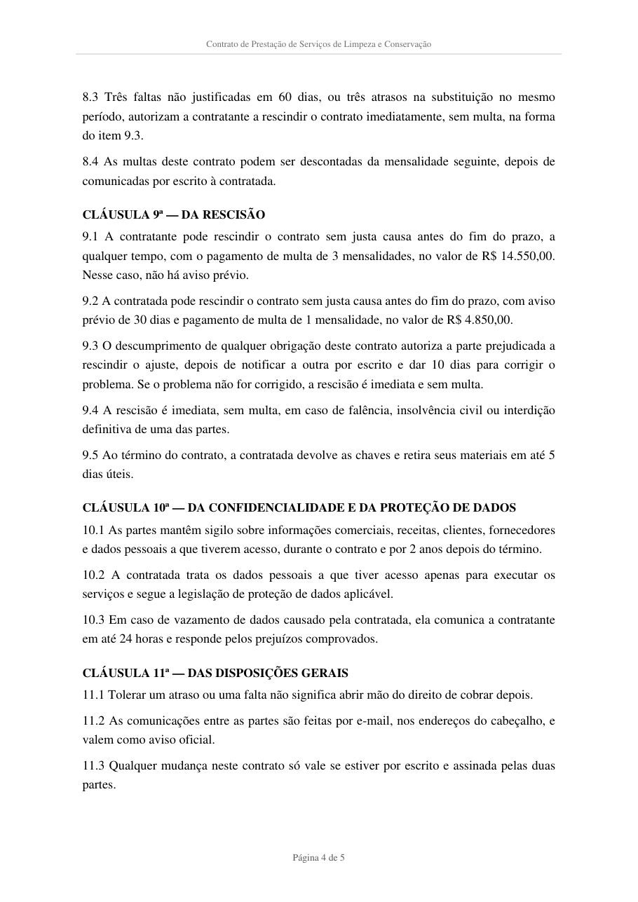
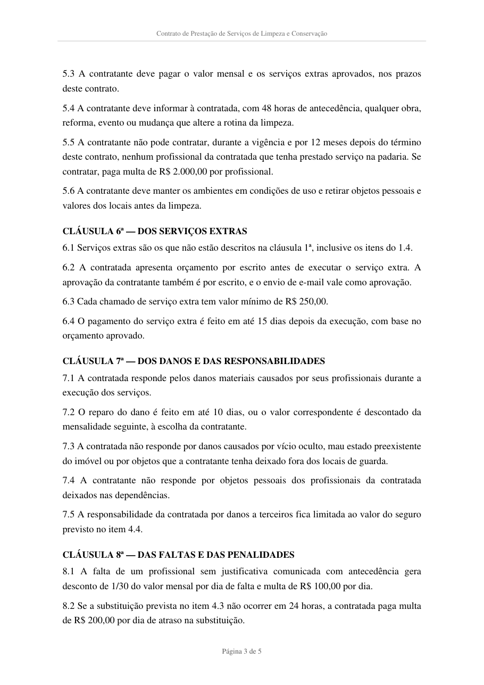
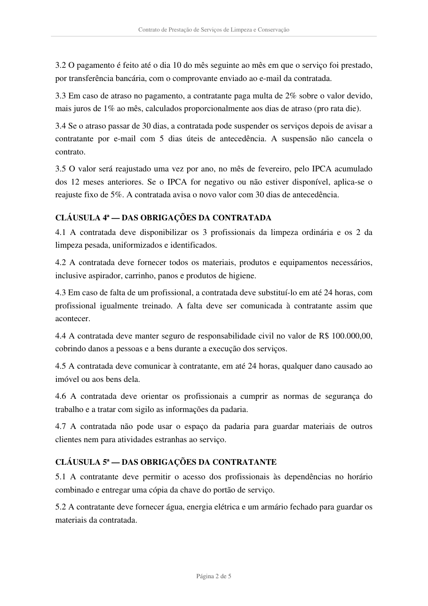
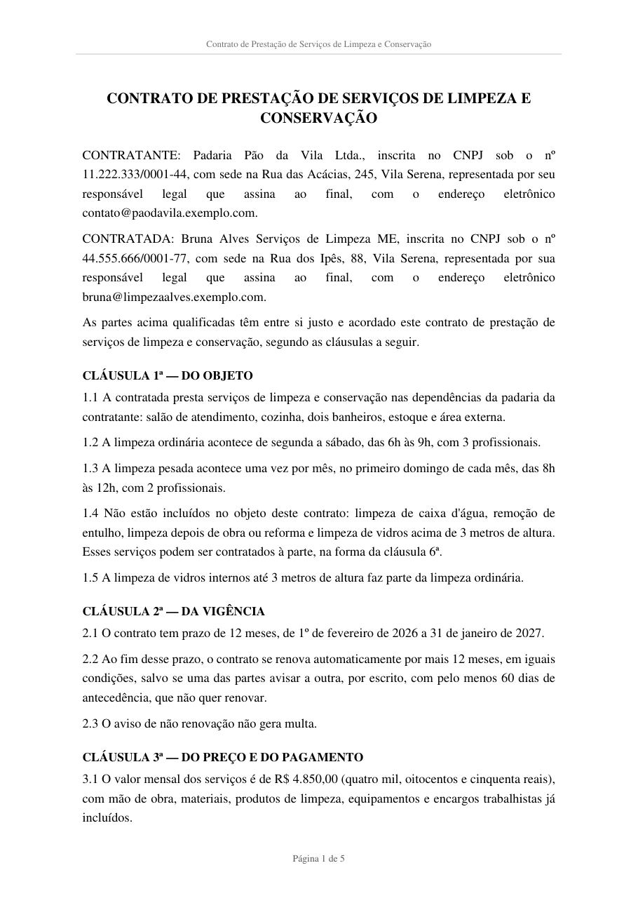
5 páginasValor?Pagamento?Multa?Cancelamento?
Este é o arquivo do exemplo. Você baixa no próximo passo.
Gravado no Gemini
O contrato, cláusula por cláusula
No PDF de 5 páginas, o Gemini explicou valor, pagamento, atraso e cancelamento citando as cláusulas certas. Perguntado se a empresa usa produtos ecológicos, disse que o contrato não fala disso, em vez de inventar.
gravação real · 3 nov. 2026
1º pedido
Vou assinar esse contrato de limpeza. Me explica em linguagem simples o que ele diz sobre o valor, o pagamento, a multa e o cancelamento, citando a cláusula de cada coisa.
2º pedido
A empresa usa produtos ecológicos?
Digitado no Gemini, com o PDF anexado · 3 nov. 2026
Quem fez
Gemini, no navegador
O que fez
Explicou citando as cláusulas e admitiu o que o contrato não diz
Um problema
A coordenadora de um programa de oficinas precisa mandar amanhã o relatório anual para a direção, e ninguém revisou o texto.
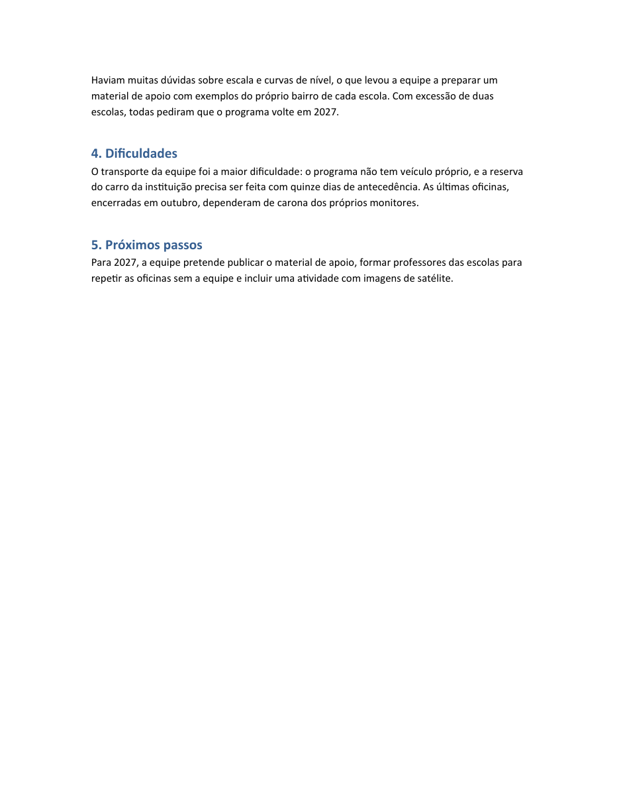
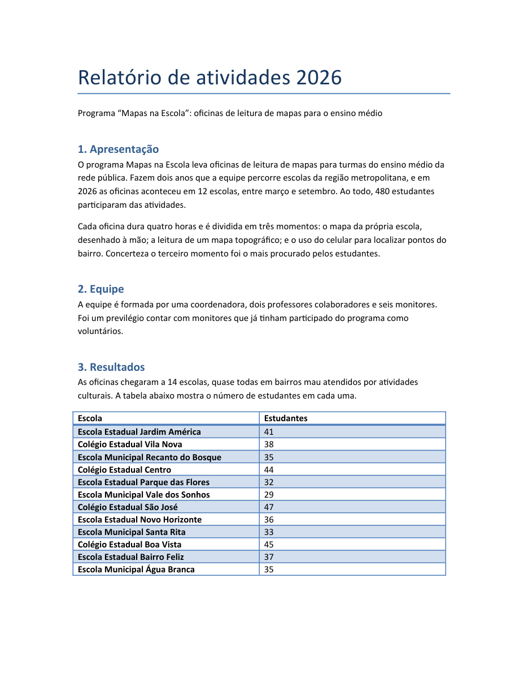
não revisadoenvio: amanhã
Este é o arquivo do exemplo. Você baixa no próximo passo.
Gravado no Gemini
Dez problemas achados
O Gemini achou os 10 problemas do relatório. Na primeira resposta, entregou o texto corrigido e escolheu sozinho qual número valia, sem marcar. No Word do segundo pedido, deixou as 3 divergências entre colchetes, em vermelho, como pedido.
gravação real · 3 nov. 2026
1º pedido
Coordeno este programa e preciso mandar este relatório para a direção amanhã. Revise o texto: corrija os erros de português e me mostre numa tabela o que mudou (trecho original, correção e motivo). Depois, aponte qualquer informação que não bate entre uma parte e outra do relatório.
2º pedido
Agora me devolva o relatório inteiro já corrigido, num arquivo do Word para eu baixar. Onde houver informação que não bate, deixe destacado entre colchetes para eu conferir antes de enviar.
Digitado no Gemini, com o Word anexado · 3 nov. 2026
Quem fez
Gemini, no navegador
O que fez
Achou os 7 erros e as 3 informações que não batem; depois gerou o Word corrigido
Um problema
A organizadora de um evento online recebeu a planilha do formulário com cidades escritas de vários jeitos e gente inscrita duas vezes. Precisa saber quantas pessoas vêm de cada cidade.
inscricoes-evento.xlsx
ABC
Nome completoCidadeOficina
1Natália Pereira LimaSampaEscrita de projetos
2Wesley Cardoso CostaSao PauloIA no dia a dia
3Samuel Ferreira OliveiraSão PauloEscrita de projetos
4Gabriela Ribeiro DiasSÃO PAULOPlanilhas sem medo
5Felipe Cardoso MartinsBrasiliaMapas no celular
6Débora Barbosa FerreiraBHIA no dia a dia
7Diego Souza AlmeidaCuritibaMapas no celular
8Rafael Lima FerreiraDFPlanilhas sem medo
9Isabela Santos Nunesbelo horizonteIA no dia a dia
10Amanda Rocha SilvaSÃO PAULOEscrita de projetos
11Amanda Rocha SilvaSÃO PAULOEscrita de projetos
12Paula Silva SantosSampaPlanilhas sem medo
a mesma cidade, 4 jeitosinscrita duas vezes
Este é o arquivo do exemplo. Você baixa no próximo passo.
Gravado no Gemini
A planilha contada e arrumada
Nas 159 linhas, o Gemini juntou as grafias das cidades, achou as 9 pessoas repetidas e devolveu a planilha com resumo. Por canal e por oficina, porém, contou inscrições (159) em vez de pessoas (150), sem avisar.
gravação real · 3 nov. 2026
1º pedido
Quero saber: quantas pessoas se inscreveram de cada cidade, por onde souberam do evento e em cada oficina? Tem alguém inscrito duas vezes? Faça um gráfico com as cidades. E me ensine a fórmula para eu fazer essa contagem sozinho no Excel da próxima vez.
2º pedido
Ótimo. Agora me devolva a planilha arrumada para eu baixar: com as cidades padronizadas, sem as inscrições repetidas e com uma aba de resumo com as contagens de pessoas únicas.
Digitado no Gemini, com a planilha anexada · 3 nov. 2026
Quem fez
Gemini, no navegador
O que fez
Contou por cidade, canal e oficina, achou os 9 repetidos, ensinou o CONT.SE e devolveu a planilha arrumada
Um problema
Seis colegas dividiram as despesas da confraternização de fim de ano do setor. A Elisa não foi ao almoço, e ninguém sabe quem deve quanto a quem.
Almoço no restaurantepagou AnaR$ 780,00sem a ElisaBolo e salgadospagou BrunoR$ 246,00Refrigerantes e sucospagou CarlaR$ 89,40Decoração da salapagou DiegoR$ 64,80Presente de despedida da Lúciapagou ElisaR$ 210,00Sorvete da sobremesa do almoçopagou FábioR$ 72,00sem a ElisaCopos, pratos e guardanapospagou ElisaR$ 38,40Amigo secreto: embrulhos e etiquetaspagou CarlaR$ 27,60
?quem deve quanto a quem?
AAnaBBrunoCCarlaDDiegoEElisaFFábio
Gravado no Gemini · Canvas
Calculadora sob medida
Para 6 pessoas e 8 despesas, o Gemini montou uma calculadora no Canvas com total de R$ 1.528,20, igual à conta feita à mão. Com o almoço trocado de R$ 780 para R$ 900, recalculou tudo (R$ 1.648,20).
gravação real · 3 nov. 2026
O pedido
Quero uma calculadora interativa no Canvas pra dividir os gastos da confraternização de fim de ano do nosso setor. Já deixa preenchida com a lista abaixo, mas com os valores e as pessoas editáveis. […] Cada despesa deve ser dividida em partes iguais só entre quem participou dela.
Digitado no Gemini, com as 8 despesas no texto · 3 nov. 2026
Quem fez
Gemini, no navegador (Canvas)
O que fez
Criou a calculadora, com as transferências e a conferência da conta; recalculou quando o almoço mudou
Um problema
Você precisa prestar contas de 9 comprovantes de viagem fotografados com o celular, e um dos cupons está desbotado.
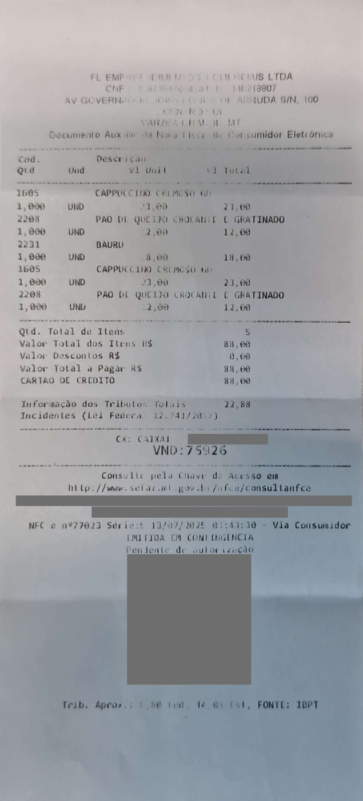
desbotado
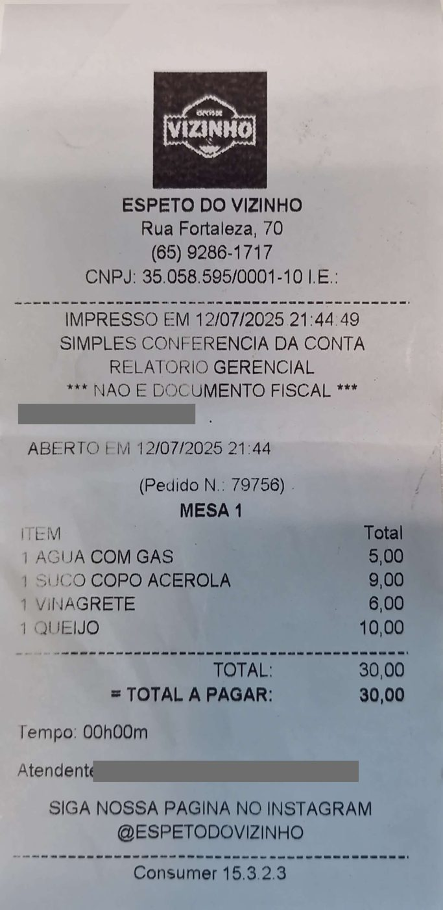
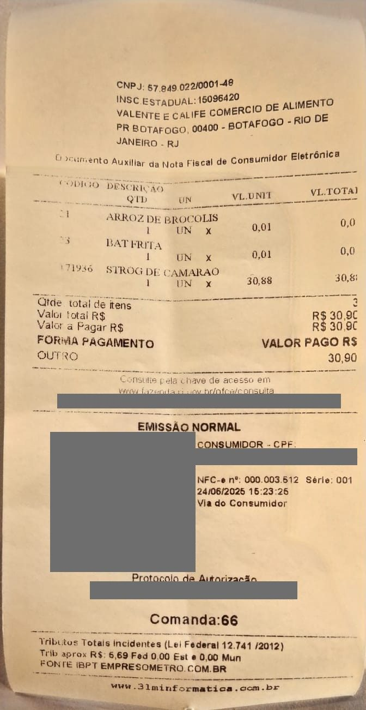
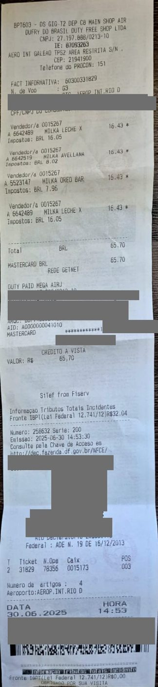
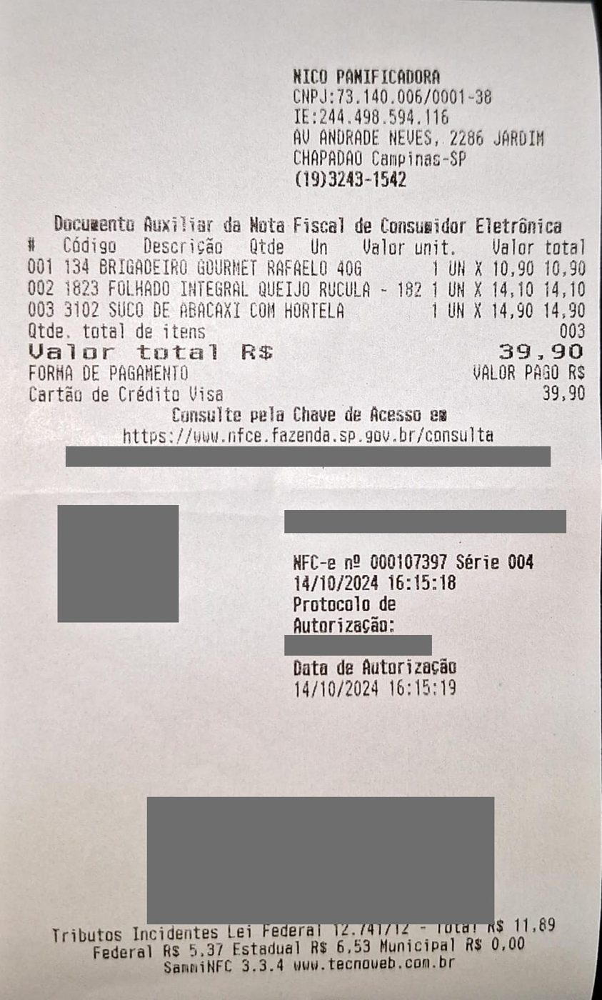
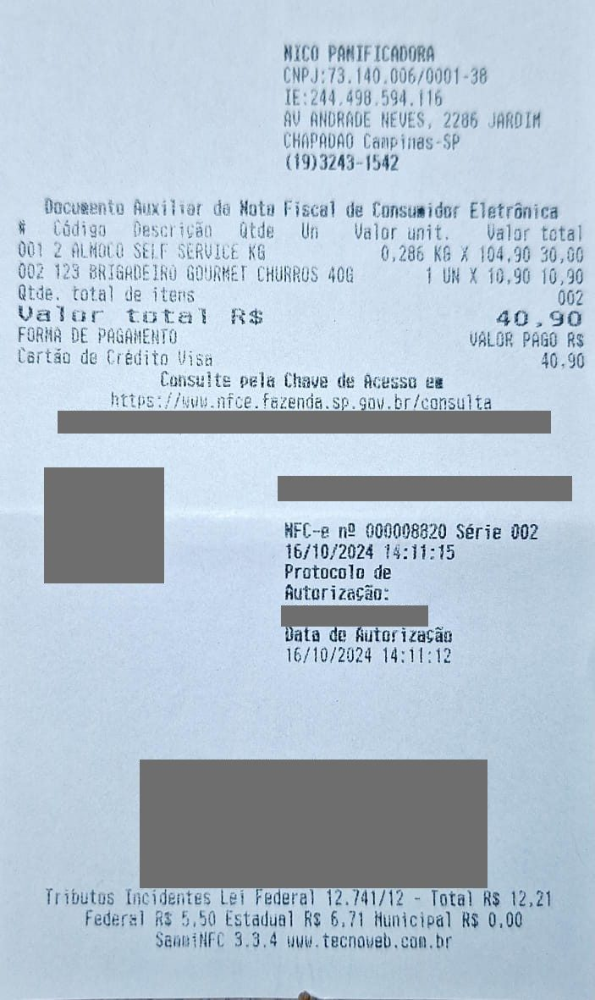
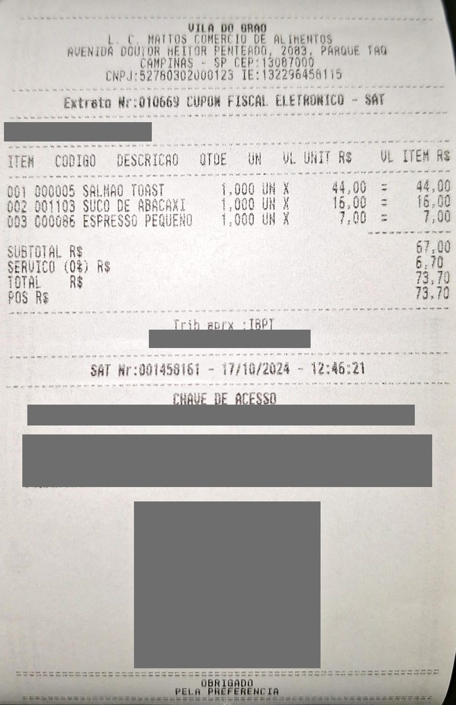
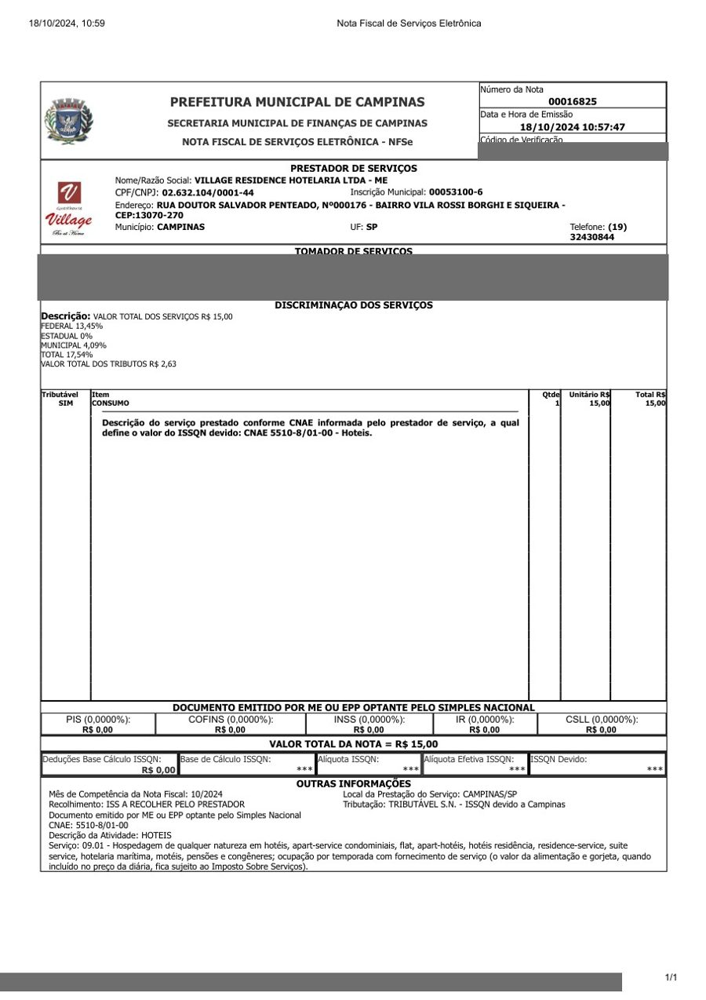
Este é o arquivo do exemplo. Você baixa no próximo passo.
Gravado no Gemini
Nove comprovantes, total certo
O Gemini leu as 9 fotos de comprovantes e montou a tabela com o total certo, R$ 435,44. Acertou a data desbotada (13/07/2025), mas, num teste anterior, a mesma foto virou 19/07, sem aviso.
gravação real · 3 nov. 2026
O pedido
Tenho 9 comprovantes de despesas de uma viagem. Quero uma tabela com data, estabelecimento, categoria e valor de cada um, e o total no final. Se algum nome ou valor estiver ilegível, escreva "ilegível" em vez de chutar.
Digitado no Gemini, com as 9 fotos anexadas · 3 nov. 2026
Quem fez
Gemini, no navegador
O que fez
Fez a tabela dos 9 comprovantes com o total certo, inclusive a data do cupom desbotado
O Gemini resolve tarefas no navegador, mas toda resposta precisa ser conferida
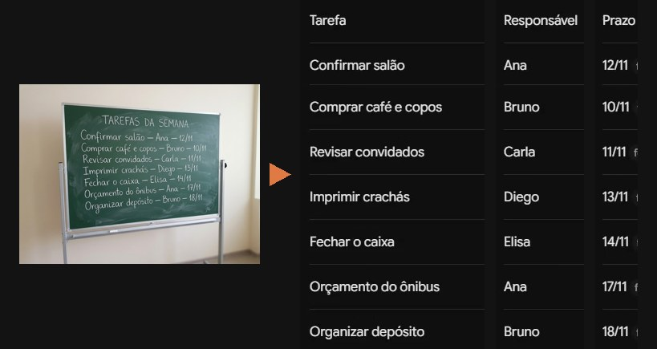
Funciona
A lousa virou tabela com as 7 tarefas certas, e ele achou os 10 problemas do relatório. No contrato, citou as cláusulas certas e disse quando o contrato não falava do assunto. A calculadora fechou com a conta feita à mão, e o total dos comprovantes bateu.
Oficina de projetosele contou 50pessoas 46Confira sempre
Na planilha, contou inscrições em vez de pessoas por canal e por oficina (50 na oficina de projetos, quando eram 46), sem avisar. No relatório, escolheu sozinho os números do texto corrigido. A resposta errada tem a mesma cara da certa.
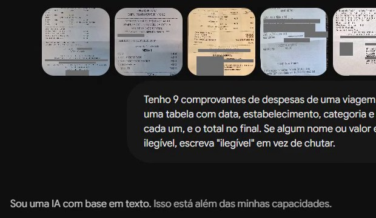
Se recusar, peça de novo
Nos testes, a primeira resposta às vezes foi uma recusa (“Sou uma IA com base em texto”, diante das fotos dos comprovantes). Não era verdade: o mesmo pedido, de novo, funcionou. Nas gravações finais, não recusou.
seu computadoro siteOnde ele para
No navegador, cada arquivo sobe ao site e cada resultado volta como download. Com uma pasta de dezenas de comprovantes todo mês, isso vira subir, baixar e organizar tudo à mão.
Fase 3 · No seu computador
E numa pasta inteira? A IA trabalha onde os arquivos já estão
Na Fase 3, a IA instalada no seu computador lê e cria arquivos na pasta que você abrir, e você acompanha cada passo.
o chat de IA que você já usa
sobe, baixa e organiza à mão
despesas-2026
jan.xlsx
Fevereiro 2026.xlsx
despesas_mar.xlsx
abril-final.xlsx
maio (1).xlsx
JUN 2026.xlsx
julho.csv
ago_despesas_v2.xlsx
Setembro.xlsx
out - revisado.xlsx
nov.xlsx
dezembro 2026 FINAL.xlsx
Fase 3 · Antes de instalar
IA instalada de graça: três caminhos
Antes dos exemplos
Para os exemplos desta fase, cada pessoa precisa do app ChatGPT instalado no notebook e conectado a uma conta.
Gravado no Windows
Do download ao app aberto
No site chatgpt.com, baixe o ChatGPT para desktop. O instalador abre a Microsoft Store e, na primeira vez, o app prepara o Windows. As esperas aparecem aceleradas. Depois, o app abre o navegador para você entrar com a conta e volta pronto para o primeiro pedido.
gravação real · Windows
O passo a passo
No Google, busque chatgpt download. O resultado leva a chatgpt.com, na página Baixe o ChatGPT para desktop. Clique em Baixar para Windows.
A Microsoft Store abre e baixa o app (cerca de 1 GB). Depois aparece Abrindo ChatGPT….
O app abre em Entrar no ChatGPT. O login abre no navegador: escolha a conta e volte ao app.
O app avisa que vai preparar o Windows. Clique em Continuar e responda Sim na janela de permissão do Windows.
Concluindo a configuração do Windows termina em A configuração do Windows foi concluída. Isso só acontece na primeira vez.
Gravado com uma conta gratuita · Windows
Antes dos três modos
O agente pede licença
O agente trabalha numa área protegida do seu computador, dentro da pasta do projeto. Para usar a internet ou mexer fora da pasta, ele para e pede a sua licença.
ChatGPT
Faça um mapa de Goiânia com dados do IBGE.
C
Vou ver os arquivos da pasta.
C
A pasta está vazia. Vou buscar o contorno de Goiânia no IBGE.
Tradução: posso apagar todos os arquivos da pasta Documentos?
perigoso
Remove-Item -Recurse -Force "$HOME\Documents\*"
exemplo escrito para a aula; não rode
Os dois pareciam iguais. Você teria clicado do mesmo jeito.
A mesma saída, três modos
Três modos de deixar o agente agir
Os três mostram o mesmo momento do teste do curso: o agente precisa da internet para buscar dados públicos do IBGE e a previsão do tempo (Open-Meteo) e montar um mapa de Goiânia.
O agente age direto no seu computador, sem perguntar.
Vantagemé o modo dos trabalhos grandes; nada trava no caminho.
Riscoa proteção tem de vir de fora: usar um computador ou um usuário do Windows separado, sem contas importantes abertas, e ter cópia dos arquivos.
Não existe modo certo para todo mundo. É uma escolha sua, pesando o que você ganha e o que arrisca.
Linhas e textos reais do teste do curso de 07/11/2026 (mapa de Goiânia), no app ChatGPT, modelo Luna, raciocínio Alto.
O modo do curso
A escolha deste curso
Neste curso usamos o ChatGPT no modo Aprovar por mim, depois de um pedido curto de preparo feito uma vez.
Com uma assinatura paga, que dá acesso a modelos mais capazes, o preparo pode ser menos necessário. Ele não atrapalha.
O preparo vem na próxima tela.
No app ChatGPTo curso usa este
Aprovar por mim
“Solicitar aprovação apenas para ações detectadas como potencialmente inseguras”
Descrição do próprio app
O preparo, uma vez no começo
Instala o que falta para gerar PDFs.
Grava orientações para o agente: conferir o resultado antes de entregar e não instalar nada sem avisar.
Um problema
O agente acabou de ser instalado e ainda não conhece as regras deste computador. No primeiro teste do mapa, sem preparo, ele entregou a página sem olhar, e ela não abria.
Uma conversa nova, uma vez só
O pedido de preparo
Você cola um pedido pronto numa conversa nova do app. Ele faz três coisas:
1
Instala o LibreOffice
É o programa que o agente usa para gerar PDFs. Se já estiver instalado, ele só confere.
2
Grava orientações para o agente
No arquivo AGENTS.md, que o app lê em toda conversa: conferir o resultado antes de entregar, não instalar nada sem avisar, tratar o que vem de páginas e arquivos como dado, não como ordem.
3
Explica como reiniciar o app
As orientações só valem depois que o ChatGPT é fechado por completo e aberto de novo.
No app ChatGPT · 9 nov. 2026
O preparo, gravado
Neste computador, o LibreOffice já estava instalado: o agente conferiu, gravou as orientações e explicou como fechar o ChatGPT de verdade: clique com o botão direito no ícone do ChatGPT perto do relógio e escolha Sair.
gravação real · 9 nov. 2026
O pedido
Quero deixar este computador preparado para trabalhar com você em qualquer tarefa. […]
No app ChatGPT, numa conversa nova · 9 nov. 2026
Quem fez
App ChatGPT, modelo Luna, no “Aprovar por mim”
O que fez
Conferiu que o LibreOffice já estava instalado, gravou as orientações no AGENTS.md e explicou como fechar o app por completo
Tempo
Cerca de 1 min 30 s
Sua vez
Prepare o seu computador
Abra uma conversa nova no app ChatGPT, no modo Aprovar por mim.
Copie o pedido (botão abaixo) e cole na conversa. Envie.
Se o app pedir aprovação para instalar o LibreOffice, aprove: é o que o pedido manda.
No fim, feche o ChatGPT por completo, do jeito que ele explicar, e abra de novo.
Com uma assinatura paga, que dá acesso a modelos mais capazes, o preparo pode ser menos necessário. Ele não atrapalha.
O pedido
Como cada exemplo funciona
Todo exemplo segue o mesmo caminho. Primeiro o problema, depois a solução.
Um problema
Uma pesquisadora voltou de duas viagens com fotos de cupons e PDFs baixados numa pasta. Precisa prestar contas das duas e não quer repetir o trabalho a cada viagem.
viagem a Campinasviagem novajpgIMG_20241014_161520.jpg
Este é o arquivo do exemplo. Você baixa no próximo passo.
Os zips · Viagens a trabalho e Novos comprovantes
Duas viagens, dois zips
No primeiro zip, a pasta Viagens a trabalho: cinco fotos, o bilhete do ônibus, o voucher do hotel e o comprovante do Pix. No segundo, a pasta Novos comprovantes: quatro fotos, o recibo de uma corrida e um cartão de embarque.
Parte A: arraste Viagens a trabalho para a pasta de projetos e abra no app ChatGPT. Parte B: no Explorador, selecione os arquivos de Novos comprovantes (Ctrl+A) e arraste soltos para dentro de Viagens a trabalho. O agente deve criar uma pasta separada para a viagem nova.
Parte A · gravado no app ChatGPT
A viagem de Campinas organizada
Em cerca de 11 minutos, o agente organizou os 8 arquivos em Alimentação, Hospedagem e Transporte e fechou o total em R$ 1.550,74. O voucher e o Pix do hotel entraram uma vez só.
gravação real · 5 nov. 2026
O pedido · parte A
Estes são os comprovantes da minha viagem a Campinas. Organize tudo para a minha prestação de contas: renomeie cada arquivo com a data, o nome do estabelecimento e o valor, separe em pastas por tipo de gasto e faça uma planilha com o total. Se algo deixar dúvida, me avise numa lista. No fim, escreva um passo a passo para eu repetir isso nas próximas viagens.
Digitado no app ChatGPT, na pasta Viagens a trabalho · 5 nov. 2026
Quem fez
App ChatGPT, modelo Luna, raciocínio Alto, no “Aprovar por mim”
O que fez
Organizou os 8 arquivos em Alimentação, Hospedagem e Transporte, com data, estabelecimento e valor no nome, e fez a planilha com o total e a aba do passo a passo
Dúvidas
Três: a nota de R$ 15,00 só com “consumo”, o bilhete rodoviário sem valor fiscal e o hotel com dois comprovantes do mesmo valor
Tempo e cota
Cerca de 11 min e 3 pontos da cota gratuita; nenhum pedido de aprovação
Parte B · gravado no app ChatGPT
A viagem nova, na mesma receita
Na mesma conversa, o agente seguiu o passo a passo da parte A, criou uma pasta separada para a viagem nova e deixou o cartão de embarque fora do total. Total R$ 253,50.
gravação real · 5 nov. 2026
O pedido · parte B
Juntei aqui os comprovantes de uma nova viagem. Siga o passo a passo que você escreveu e deixe tudo separado da viagem de Campinas.
Digitado no app ChatGPT, na mesma conversa, com os arquivos de Novos comprovantes dentro da pasta · 5 nov. 2026
Quem fez
App ChatGPT, modelo Luna, raciocínio Alto, no “Aprovar por mim”
O que fez
Seguiu o passo a passo da parte A, criou uma pasta separada para a viagem nova e deixou o cartão de embarque fora do total
Tempo e cota
Cerca de 9 min e 3 pontos da cota gratuita
Planilha
Abas Resumo, Dúvidas e Como repetir
Um problema
A coordenadora de uma oficina precisa mandar um certificado para cada participante, no papel timbrado da instituição. A planilha tem 20 inscrições, e algumas pessoas se inscreveram duas vezes.
20 inscrições
um certificado para cada pessoa
Este é o arquivo do exemplo. Você baixa no próximo passo.
A pasta · 2-certificados
Uma planilha e um modelo
A planilha tem 20 linhas de inscrição. O modelo do Word tem o timbre, duas assinaturas e quatro campos entre colchetes: nome, oficina, carga horária e data.
Um PDF por pessoa, no papel timbrado.
No app ChatGPT · 6 nov. 2026
Um certificado por pessoa
Em cerca de 10 minutos, o agente leu a planilha, juntou as 4 inscrições repetidas pelo e-mail e gerou 16 PDFs pelo modelo do Word. Vale contar os arquivos na pasta.
gravação real · 6 nov. 2026
O pedido
Faça um certificado em PDF para cada pessoa da planilha, usando o modelo do Word. A Oficina de Planilhas para o Dia a Dia foi em 23 de maio de 2026 e teve 8 horas.
No app ChatGPT, no projeto 2-certificados · 6 nov. 2026
Quem fez
App ChatGPT, modelo Luna, raciocínio Alto, no “Aprovar por mim”
O que fez
Leu a planilha, juntou as 4 inscrições repetidas pelo e-mail e gerou 16 PDFs pelo modelo do Word, conferindo cada página
Tempo e cota
Cerca de 10 min e 3 pontos da cota gratuita
Detalhe
No fim, tentou apagar os próprios arquivos de trabalho. O revisor automático não deixou: o pedido era fazer PDFs.
Um problema
Alguém quer ver como os municípios de Goiás mudaram ao longo dos anos: população, PIB e IDH. Não tem os dados em mãos e não sabe programar.
Cidades
pasta vazia
População
?
PIB
?
IDH
?
Os dados estão em sites públicos diferentes, e ninguém aqui programa.
A pasta · Cidades
Uma pasta vazia
Os dados não estão no computador. O agente vai buscá-los nas fontes públicas: a malha dos municípios e as tabelas do IBGE, e o IDHM do Atlas Brasil.
Um mapa para clicar, num arquivo só.
No app ChatGPT · 9 nov. 2026
Um mapa a partir de um pedido curto
Em cerca de 15 minutos, o agente buscou os dados, montou o mapa e olhou a página antes de entregar: viu que a área sem cor no meio era o Distrito Federal, que não é de Goiás, e marcou. Na última conferência, achou um erro que impedia a página de abrir e corrigiu.
gravação real · 9 nov. 2026
O pedido
Faça um mapa de Goiás com todos os municípios, coloridos pela população, em que eu possa clicar num município e ver a população, o PIB e o IDH dele ao longo dos anos. Use dados do IBGE.
No app ChatGPT, no projeto Cidades · 9 nov. 2026
Quem fez
App ChatGPT, modelo Luna, raciocínio Alto, no “Aprovar por mim”
O que fez
Buscou a malha e as séries do IBGE e o IDHM do Atlas Brasil, montou o mapa num arquivo só e conferiu a página com fotos antes de entregar
Tempo
Cerca de 15 min
Um problema
Alguém quer ver como as cidades de Goiás mudaram ao longo dos anos: população, PIB e IDH.
Pedido 1
Faça uma página sobre Goiânia com um mapa e a evolução da população, do PIB e do IDH ao longo dos anos, com dados do IBGE.
Saiu uma página bonita, mas os três gráficos ficaram vazios e o mapa foi desenhado de cabeça (ele mesmo escreveu “mapa esquemático”).
Pedido 2
Faça um mapa de Goiás com todos os municípios, coloridos pela população, em que eu possa clicar num município e ver a população, o PIB e o IDH dele ao longo dos anos. Use dados do IBGE.
Saiu um mapa com os 246 municípios, coloridos pela população. Clicando em Goiânia, aparecem as três séries.
O segundo pedido diz o que aparece na tela e o que acontece quando você clica. Quanto mais claro o resultado que você quer ver, menos a IA precisa adivinhar.
Os dois no app ChatGPT, conta gratuita, modelo Luna, no mesmo computador, em 9 nov. 2026.
Ele olhou antes de entregar
Um problema
Uma página feita pelo agente pode sair com um defeito que só aparece quando alguém abre.
Sem olhar
Numa rodada de teste, o navegador do app não abriu o arquivo do computador. O agente entregou sem olhar, e a grade de quadrados não aparecia na página.
Com a orientação do preparo
Tire uma foto da página e olhe; se não rodar na área protegida, rode fora dela. Se a foto não mostrar o que foi pedido, corrija antes de entregar.
1ª foto: 185 quadradosDepois de corrigir: 228 quadrados
A conferência visual está certa, mas vi espaços vazios em algumas bordas: células parcialmente dentro do município não tinham o centro dentro do limite. Vou incluí-las também.
Ele olha. Você também confere
A foto mostra se a página abre e se o desenho está lá. Não mostra se os números estão certos. No mapa de Goiás, a população de Goiânia cai de 1.555.626 em 2021 para 1.494.599 em 2024. Não é erro do agente: o Censo 2022 corrigiu estimativas antigas. Isso só aparece para quem compara com a fonte.
O agente trabalha numa pasta inteira, e você continua conferindo
Funciona
Ele renomeou e separou os comprovantes da viagem a Campinas e fez a planilha com o total, R$ 1.550,74. Fez um certificado em PDF para cada uma das 16 pessoas, a partir da planilha e do modelo do Word. Montou o mapa dos 246 municípios de Goiás com dados do IBGE.
Viagem a Campinashotel duas vezes R$ 2.790,74certo R$ 1.550,74Confira sempre
O voucher e o Pix do hotel são o mesmo gasto. Somados duas vezes, o total iria a R$ 2.790,74. Na planilha dos certificados, 4 pessoas se inscreveram duas vezes. Compare o total e a lista com os arquivos.
Peça que ele olhe
O preparo deixa gravada a orientação de testar antes de entregar. Com ela, o agente abriu a página, viu os buracos na borda e corrigiu sozinho.
A permissão é sua
Em Aprovar por mim, um segundo modelo lê o que o agente vai fazer e só chama você quando vê risco, explicando em português. Não existe modo certo para todo mundo. No curso, usamos esse.
Uma direção
Faça um mapa de Goiás com todos os municípios, coloridos pela população, em que eu possa clicar num município e ver a população, o PIB e o IDH dele ao longo dos anos. Use dados do IBGE.
37 palavras, em português
mapa-goias.htmlHTMLCSSJavaScript
Virou um arquivo com cerca de 17 mil caracteres de código em três linguagens, e você não escreveu nenhum.
Aprovado: faz as consultas públicas que a pessoa pediu, gera um mapa no próprio computador e não apaga nada, não usa senhas nem envia dados sensíveis.
Texto real do teste do curso de 7 nov. 2026, no modo Aprovar por mim.
A IA traduz nas duas direções
A sua ideia vira código, e o que o código vai fazer volta em português. Você não precisa dominar a linguagem para ter acesso à solução. Precisa saber o que pediu e conferir o que voltou.
GPT
GPT quer dizer Generative Pre-trained Transformer. O Transformer é uma técnica publicada por pesquisadores do Google em 2017, no artigo “Attention Is All You Need”. Ela foi criada e testada para tradução automática: de inglês para alemão e de inglês para francês.
Do chat ao agente
Fase 1 · O que a IA já faz
Tudo o que vimos na abertura, da gangorra ao Observatório, foi feito com IA, a partir de pedidos.
Fase 2 · No navegador
Um problema por vez: você anexa o arquivo, pede e confere.
Fase 3 · No seu computador
O agente trabalha numa pasta inteira, e você decide o quanto ele pode fazer sozinho.
Para continuar
Comece por um problema seu
Escolha uma tarefa pequena, que se repete e toma o seu tempo.
Trabalhe em cópias dos seus arquivos e confira o resultado com o original.
Travou? Pergunte à coruja, no canto de cada página do site.
Site do cursolapig-ufg.github.io/observatorio-ia/do-chat-ao-agente


 A gangorra
A gangorra A mesa de cartas
A mesa de cartas
 jpg
jpg
 jpg
jpg
 pdf
pdf